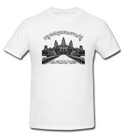
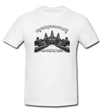

Traditional Khmer clothing is both beautiful and functional. The styles have been shaped by Cambodia's hot tropical climate, as well as its cultural traditions. Both men and women wear loose, lightweight clothing made of natural fibers and natural material like cotton or silk. Bright colors and intricate details showcase the skill of Khmer weavers and tailors. The most well-known traditional garment is the sampot, a wrap-around lower garment worn by both men and women. The sampot phamoong, worn by women, is a rectangular fabric wrapped around the waist and pinned at the top to create a skirt. Men wear the sampot kben, which is tucked in and held up by a belt called a kroma. The sampot comes in colorful checkered patterns or colorful floral silk brocades.
សំពត់-Sampot
The sampot chang ken is a full, ankle-length skirt. It's made of silk and decorated with floral or geometric patterns. Women wear this for special occasions like weddings or festivals. Thesampot chang phnom is a knec-length cotton skirt. It's more casual and worn for everyday activities. The sambot is wrapsed around the waist and secured in place with a belt called akroma.


 
